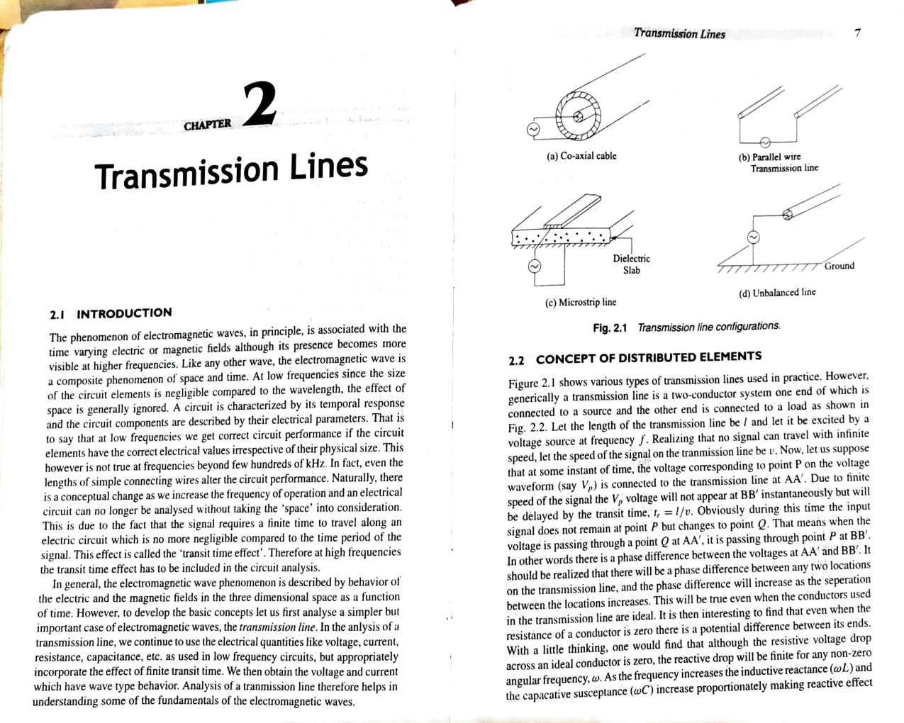
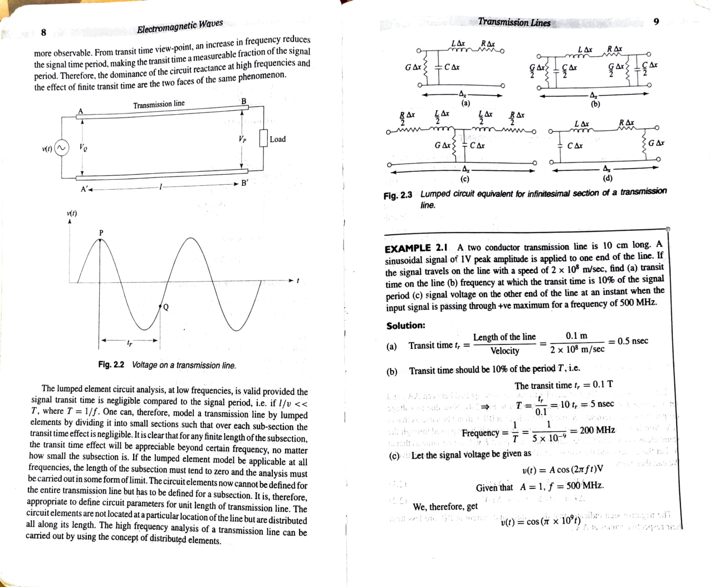
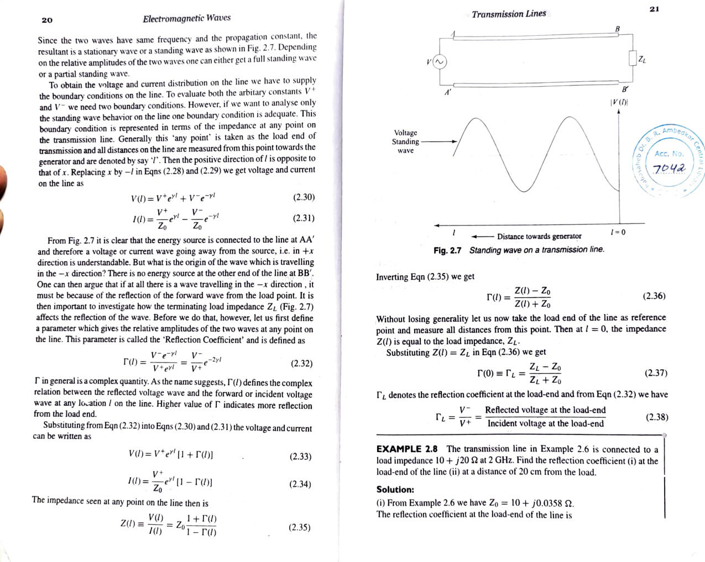
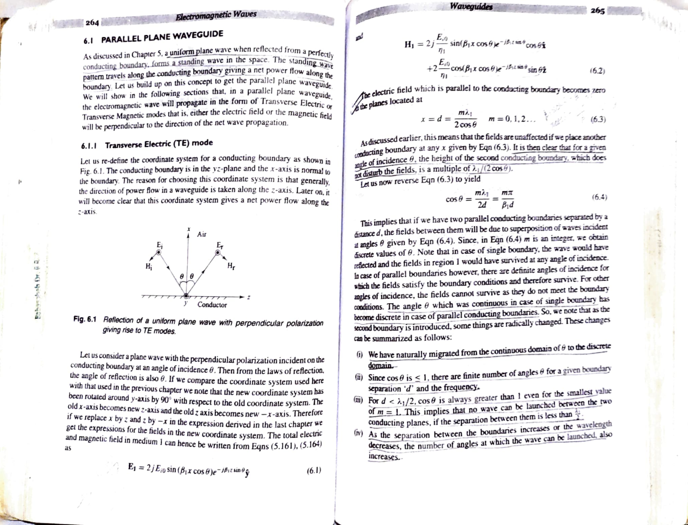

Transmission Lines & Waveguide Comprehensive Handbook
A mathematically rigorous, unified reference manual covering distributed transmission-line parameters ($R, L, G, C$), Telegrapher wave dynamics, generalized impedance transformations, lossless/low-loss approximations, modal plane-wave bouncing, the non-existence of TEM in hollow conductors, and complete boundary value solutions for rectangular waveguides.
1. The Transition from Lumped Circuit Theory to Distributed Waves
In low-frequency electrical circuits, the spatial dimensions of components and connecting wires are minuscule compared to the electromagnetic wavelength ($\ell \ll \lambda$). Under this condition, electrical disturbances appear to travel instantaneously across the network. Kirchhoff's Voltage Law (KVL) and Kirchhoff's Current Law (KCL) hold at single discrete nodes.

1.2 Distributed Primary Constants
Because physical properties are distributed uniformly along the length of the line rather than lumped inside discrete ceramic packages, we define four primary constants per unit length:
| Symbol | Parameter Description | SI Unit | Electromagnetic Origin |
|---|---|---|---|
| $R$ | Series resistance per unit length | $\Omega/\text{m}$ | Finite bulk conductivity of the metallic conductors; ohmic heat dissipation. |
| $L$ | Series inductance per unit length | $\text{H/m}$ | Magnetic flux linkage looping the current-carrying conductors ($W_m = \frac{1}{2} L I^2$). |
| $G$ | Shunt conductance per unit length | $\text{S/m}$ | Finite conductivity $\sigma$ of the dielectric medium; transverse leakage conduction current. |
| $C$ | Shunt capacitance per unit length | $\text{F/m}$ | Electric field lines bridging the potential difference between conductors ($W_e = \frac{1}{2} C V^2$). |

1.3 Derivation of the Telegrapher Equations
Applying Kirchhoff's circuit laws to a differential slice of length $\Delta x$:
(a) The transit time $t_r$ on the line.
(b) The operating frequency at which the transit time corresponds to $10\%$ of the signal period $T$.
(c) The instantaneous signal voltage on the far end of the line at the moment the input signal passes through its positive maximum ($t = 0, v(0) = 1\text{ V}$) for $f = 500\text{ MHz}$.
2. Helmholtz Wave Equations and Secondary Line Parameters
Under sinusoidal steady-state excitation, we replace time differentiation with multiplication by $j\omega$ ($\partial/\partial t \to j\omega$). The coupled Telegrapher equations become: $$-\frac{dV}{dx} = (R + j\omega L) I \qquad -\frac{dI}{dx} = (G + j\omega C) V$$
Differentiating the voltage equation with respect to $x$ and substituting $dI/dx$: $$\frac{d^2 V}{dx^2} = (R + j\omega L)(G + j\omega C) V \implies \boxed{ \frac{d^2 V}{dx^2} - \gamma^2 V = 0 }$$ Where the complex propagation constant $\gamma$ is defined as:
2.2 Characteristic Impedance ($Z_0$)
The general solution to the second-order linear differential equation is a sum of forward and backward travelling waves: $$V(x) = V^+ e^{-\gamma x} + V^- e^{+\gamma x}$$ Substituting this solution back into $-\frac{dV}{dx} = (R + j\omega L) I$, the current solution becomes: $$I(x) = \frac{V^+}{Z_0} e^{-\gamma x} - \frac{V^-}{Z_0} e^{+\gamma x}$$ Where the characteristic impedance $Z_0$ is defined as:
(a) $1\text{ MHz}$
(b) $1\text{ GHz}$
3. Standing Waves, Reflection Coefficient and Impedance Transformation
When a transmission line is terminated in an arbitrary load impedance $Z_L \ne Z_0$, the forward travelling wave is partially or fully reflected. The superposition of forward and backward waves forms a standing wave pattern.

3.2 The Generalized Reflection Coefficient $\Gamma(l)$
Measuring distance $l$ backwards from the load ($l = 0$ at the load, $l = d$ towards generator, so $x = -l$): $$V(l) = V^+ e^{\gamma l} \left[ 1 + \Gamma(l) \right] \qquad I(l) = \frac{V^+}{Z_0} e^{\gamma l} \left[ 1 - \Gamma(l) \right]$$ Where the generalized reflection coefficient $\Gamma(l)$ is:
3.3 Quarter-Wave and Half-Wave Invariance Properties
Half-Wave Repeat ($\ell = \lambda/2$)
Since $\beta \ell = \left(\frac{2\pi}{\lambda}\right)\left(\frac{\lambda}{2}\right) = \pi$, $\tan(\pi) = 0$. $$\boxed{ Z_{\text{in}}\left(\ell + \frac{\lambda}{2}\right) = Z_{\text{in}}(\ell) }$$ The impedance repeats every half-wavelength.
Quarter-Wave Inverter ($\ell = \lambda/4$)
Since $\beta \ell = \pi/2$, dividing numerator and denominator by $\tan(\pi/2) \to \infty$: $$\boxed{ Z_{\text{in}} = \frac{Z_0^2}{Z_L} \iff \bar{Z}_{\text{in}} = \frac{1}{\bar{Z}_L} }$$ Normalized impedance inverts every quarter-wavelength!
3.4 Power Transfer on a Lossless Line
The time-average power delivered to the load is given by Poynting theorem:
(a) The reflection coefficient $\Gamma_L$ at the load.
(b) The reflection coefficient $\Gamma(l)$ at a distance $l = 20\text{ cm}$ from the load.
4. Lossless and Low-Loss Transmission Lines
Practical RF transmission lines are intentionally engineered to minimize ohmic heat and dielectric leakage losses. We analyze two standard approximations:
Lossless Line ($R = 0, G = 0$)
$$\alpha = 0$$ $$\beta = \omega\sqrt{LC}$$ $$Z_0 = \sqrt{\frac{L}{C}} \quad (\text{Purely real})$$ $$v_p = \frac{\omega}{\beta} = \frac{1}{\sqrt{LC}} = \frac{c}{\sqrt{\mu_r \epsilon_r}}$$
Low-Loss Line ($R \ll \omega L, G \ll \omega C$)
Factoring out $j\omega\sqrt{LC}$ and expanding binomially: $$\gamma \approx j\omega\sqrt{LC}\left(1 - j\frac{R}{2\omega L}\right)\left(1 - j\frac{G}{2\omega C}\right)$$ $$\boxed{ \alpha \approx \frac{R}{2 Z_0} + \frac{G Z_0}{2} }$$ $$\boxed{ \beta \approx \omega\sqrt{LC} }$$
5. Waveguides, Modal Plane Waves & Rectangular Enclosures
At microwave frequencies above $3\text{ GHz}$, coaxial cables suffer severe dielectric dissipation and copper skin losses. In this regime, hollow metallic waveguides transport electromagnetic energy with dramatically lower attenuation through modal propagation.

Electromagnetic Proof: Does TEM Mode Exist Inside a Hollow Waveguide?
Suppose a Transverse Electromagnetic (TEM) mode could exist inside a hollow, single-conductor rectangular waveguide.
1. For a TEM mode, both longitudinal field components are identically zero: $E_z = 0$ and $H_z = 0$.
2. Because $H_z = 0$, the magnetic field lines $\mathbf{H}$ lie strictly in the transverse $xy$-plane and must form closed loops since $\nabla \cdot \mathbf{B} = 0$.
3. According to Ampere-Maxwell's Law, the line integral of $\mathbf{H}$ around any closed contour $C$ in the transverse plane equals the enclosed axial current:
$$\oint_C \mathbf{H} \cdot d\mathbf{l} = I_{\text{enclosed}} = \iint_S \left( \mathbf{J}_{\text{cond}} + \epsilon \frac{\partial \mathbf{E}}{\partial t} \right) \cdot d\mathbf{S}_z$$
4. Because the interior of the waveguide is hollow, there is no inner center conductor $\implies \mathbf{J}_{\text{cond}} = 0$.
5. The displacement current term requires an axial electric field component: $\frac{\partial E_z}{\partial t}$. But for a TEM mode, $E_z = 0 \implies I_{\text{disp}} = 0$.
6. Therefore, $\oint_C \mathbf{H} \cdot d\mathbf{l} = 0$ for every arbitrary closed path in the transverse plane!
7. Non-trivial magnetic field loops cannot exist if their circulation vanishes everywhere.
5.3 Rectangular Waveguide Boundary Value Analysis
For a rectangular hollow guide with inner width $a$ along the $x$-axis and height $b$ along the $y$-axis ($a > b$), the fields satisfy the Helmholtz equation with conducting boundary conditions: $$\text{Tangential } E = 0 \text{ at } x=0, x=a \text{ and } y=0, y=b$$
The Dominant Mode: $TE_{10}$
For TM modes, both $m \ge 1$ and $n \ge 1$ are required to produce non-vanishing fields (lowest TM mode is $TM_{11}$). For TE modes, either $m$ or $n$ can be zero! Because $a > b$ by universal convention: $$f_{c,10} = \frac{v}{2a} < f_{c,01} = \frac{v}{2b} < f_{c,11}$$ Therefore, $TE_{10}$ always has the lowest cutoff frequency of any mode and is called the dominant mode of the rectangular waveguide. $$\boxed{ \lambda_{c,10} = 2a }$$ Physical Law: The longest wavelength capable of propagating through a rectangular waveguide is exactly twice its broad dimension $a$!
(a) Find the cutoff frequency $f_{c,10}$ and phase constant $\beta$.
(b) Write the expressions for all electric and magnetic field components.
(c) Calculate the time-average power carried through the waveguide.